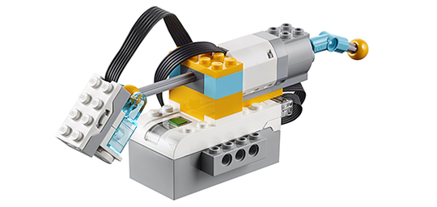

Ayuda para la programación
Para probar este programa, incline la cabeza hacia abajo.

El sensor de inclinación tiene seis modos: detectar inclinación hacia atrás, hacia arriba, hacia la izquierda, hacia la derecha, detectar nivel de inclinación y detectar agitación.
Para usar los seis modos del mando, los estudiantes deben duplicar las cadenas de programación y asignar una cadena a cada modo.